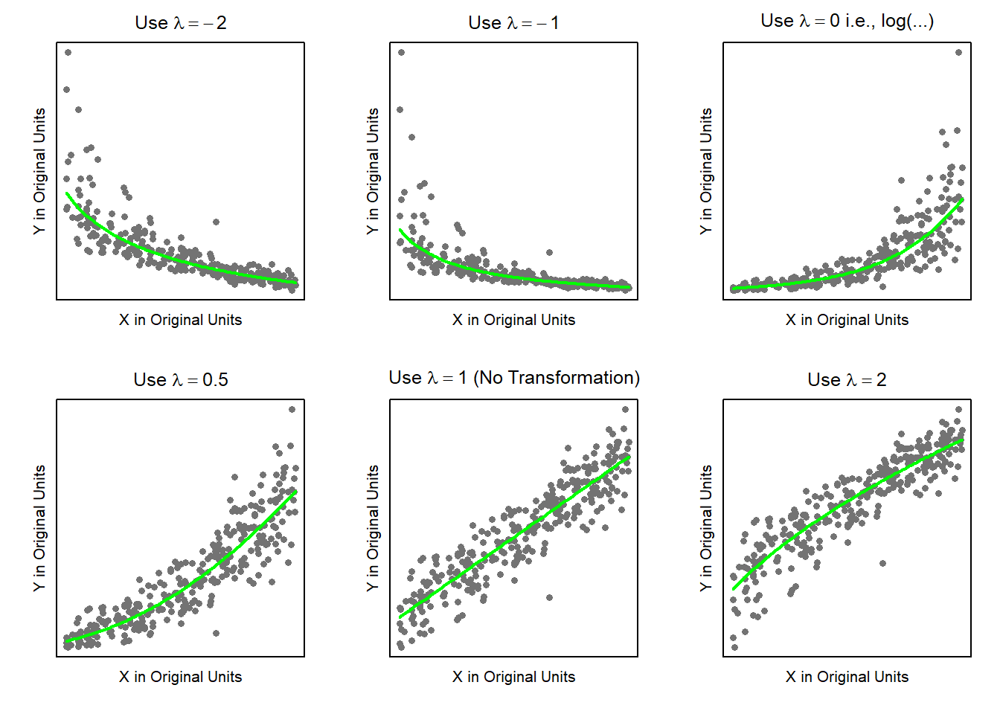
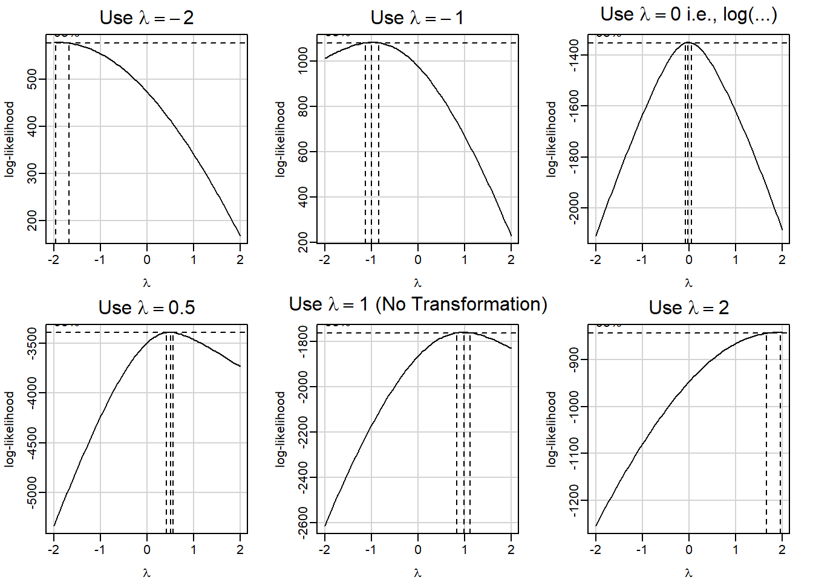
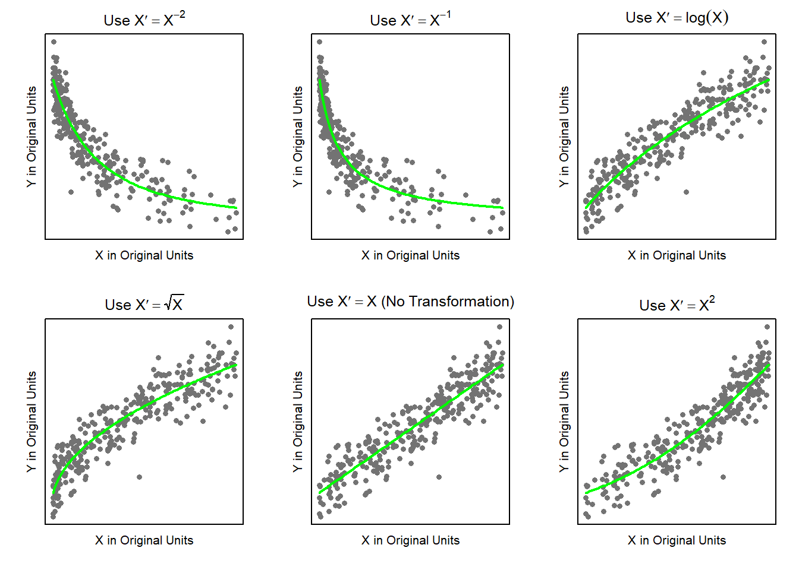

library(car)Y transformations are denoted by y-prime, written \(Y'\), and consist of raising \(Y\) to some power called \(\lambda\).
\[ Y' = Y^\lambda \quad \text{(Y Transformation)} \]
| Value of \(\lambda\) | Transformation to Use | R Code |
|---|---|---|
| -2 | \(Y' = Y^{-2} = 1/Y^2\) | lm(Y^-2 ~ X) |
| -1 | \(Y' = Y^{-1} = 1/Y\) | lm(Y^-1 ~ X) |
| 0 | \(Y' = \log(Y)\) | lm(log(Y) ~ X) |
| 0.5 | \(Y' = \sqrt(Y)\) | lm(sqrt(Y) ~ X) |
| 1 | \(Y' = Y\) | lm(Y ~ X) |
| 2 | \(Y' = Y^2\) | lm(Y^2 ~ X) |
The following panel of scatterplots can give you a good feel for when to try different values of \(\lambda\).
set.seed(15)
N <- 300
X <- runif(N, 5, 50)
Y <- 25 + 3.5*X + rnorm(N, 0, 20)
Ya <- 1/sqrt(Y) #1/Y^2 Lam = -2
Yb <- 1/Y #1/Y Lam = -1
Yc <- exp(.02*Y) #log(Y) Lam = 0
Yd <- Y^2 #sqrt(Y) Lam = 0.5
Ye <- Y #Y Lam = 1
Yf <- sqrt(Y) #Y^2 Lam = 2
par(mfrow=c(2,3), mai=c(.4,.4,.3,.2), mgp=c(0.5,0.5,0))
plot(Ya ~ X, main=expression(paste("Use ", lambda == -2)), ylab="Y in Original Units", pch=16, col="gray45", cex=0.9, yaxt='n', xaxt='n', xlab="X in Original Units")
b <- coef(lm(Ya^-2 ~ X))
curve(1/sqrt(b[1] + b[2]*x), add=TRUE, col="green", lwd=2)
plot(Yb ~ X, main=expression(paste("Use ", lambda == -1)), ylab="Y in Original Units", pch=16, col="gray45", cex=0.9, yaxt='n', xaxt='n', xlab="X in Original Units")
b <- coef(lm(Yb^-1 ~ X))
curve(1/(b[1] + b[2]*x), add=TRUE, col="green", lwd=2)
plot(Yc ~ X, main=expression(paste("Use ", lambda == 0, " i.e., log(...)")), ylab="Y in Original Units", pch=16, col="gray45", cex=0.9, yaxt='n', xaxt='n', xlab="X in Original Units")
b <- coef(lm(log(Yc) ~ X))
curve(exp(b[1] + b[2]*x), add=TRUE, col="green", lwd=2)
plot(Yd ~ X, main=expression(paste("Use ", lambda == 0.5)), ylab="Y in Original Units", pch=16, col="gray45", cex=0.9, yaxt='n', xaxt='n', xlab="X in Original Units")
b <- coef(lm(sqrt(Yd) ~ X))
curve((b[1] + b[2]*x)^2, add=TRUE, col="green", lwd=2)
plot(Ye ~ X, main=expression(paste("Use ", lambda == 1, " (No Transformation)")), ylab="Y in Original Units", pch=16, col="gray45", cex=0.9, yaxt='n', xaxt='n', xlab="X in Original Units")
b <- coef(lm(Ye ~ X))
curve((b[1] + b[2]*x), add=TRUE, col="green", lwd=2)
plot(Yf ~ X, main=expression(paste("Use ", lambda == 2)),
ylab="Y in Original Units", pch=16, col="gray45", cex=0.9, yaxt='n', xaxt='n', xlab="X in Original Units")
b <- coef(lm(Yf^2 ~ X))
curve(sqrt(b[1] + b[2]*x), add=TRUE, col="green", lwd=2)
The boxCox(...) function in R can also be helpful on finding values of \(\lambda\) to try.
par(mfrow=c(2,3), mai=c(.4,.4,.3,.2), mgp=c(2,0.5,0))
boxCox(lm(Ya ~ X))
mtext(side=3, text=expression(paste("Use ", lambda == -2)), line=.5)
boxCox(lm(Yb ~ X))
mtext(side=3, text=expression(paste("Use ", lambda == -1)), line=.5)
boxCox(lm(Yc ~ X))
mtext(side=3, text=expression(paste("Use ", lambda == 0, " i.e., log(...)")), line=.5)
boxCox(lm(Yd ~ X))
mtext(side=3, text=expression(paste("Use ", lambda == 0.5)), line=.5)
boxCox(lm(Ye ~ X))
mtext(side=3, text=expression(paste("Use ", lambda == 1, " (No Transformation)")), line=.5)
boxCox(lm(Yf ~ X))
mtext(side=3, text=expression(paste("Use ", lambda == 2)), line=.5)
X-transformations are more difficult to recognize than y-transformations. The best hint to consider an x-transformation is when the variance of the residuals is constant across all fitted-values, but linearity is clearly violated.
The following panel of scatterplots can give you a good feel for when to try different values of an x-transformation.
set.seed(15)
N <- 300
X <- runif(N, 5, 50)
Y <- 25 + 3.5*X + rnorm(N, 0, 20)
Xa <- 1/sqrt(X) #1/X^2 Lam = -2
Xb <- 1/X #1/X Lam = -1
Xc <- exp(.02*X) #log(X) Lam = 0
Xd <- X^2 #sqrt(X) Lam = 0.5
Xe <- X #X Lam = 1
Xf <- sqrt(X) #X^2 Lam = 2
par(mfrow=c(2,3), mai=c(.4,.4,.3,.2), mgp=c(0.5,0.5,0))
plot(Y ~ Xa, main=expression(paste("Use ", X*minute == X^-2)), ylab="Y in Original Units", pch=16, col="gray45", cex=0.9, yaxt='n', xaxt='n', xlab="X in Original Units")
b <- coef(lm(Y ~ I(Xa^-2)))
curve(b[1] + b[2]*x^-2, add=TRUE, col="green", lwd=2)
plot(Y ~ Xb, main=expression(paste("Use ", X*minute == X^-1)), ylab="Y in Original Units", pch=16, col="gray45", cex=0.9, yaxt='n', xaxt='n', xlab="X in Original Units")
b <- coef(lm(Y ~ I(Xb^-1)))
curve(b[1] + b[2]*x^-1, add=TRUE, col="green", lwd=2)
plot(Y ~ Xc, main=expression(paste("Use ", X*minute == log(X))), ylab="Y in Original Units", pch=16, col="gray45", cex=0.9, yaxt='n', xaxt='n', xlab="X in Original Units")
b <- coef(lm(Y ~ log(Xc)))
curve(b[1] + b[2]*log(x), add=TRUE, col="green", lwd=2)
plot(Y ~ Xd, main=expression(paste("Use ", X*minute == sqrt(X))), ylab="Y in Original Units", pch=16, col="gray45", cex=0.9, yaxt='n', xaxt='n', xlab="X in Original Units")
b <- coef(lm(Y ~ sqrt(Xd)))
curve(b[1] + b[2]*sqrt(x), add=TRUE, col="green", lwd=2)
plot(Y ~ Xe, main=expression(paste("Use ", X*minute == X, " (No Transformation)")), ylab="Y in Original Units", pch=16, col="gray45", cex=0.9, yaxt='n', xaxt='n', xlab="X in Original Units")
b <- coef(lm(Y ~ Xe))
curve((b[1] + b[2]*x), add=TRUE, col="green", lwd=2)
plot(Y ~ Xf, main=expression(paste("Use ", X*minute == X^2)),
ylab="Y in Original Units", pch=16, col="gray45", cex=0.9, yaxt='n', xaxt='n', xlab="X in Original Units")
b <- coef(lm(Y ~ I(Xf^2)))
curve(b[1] + b[2]*x^2, add=TRUE, col="green", lwd=2)